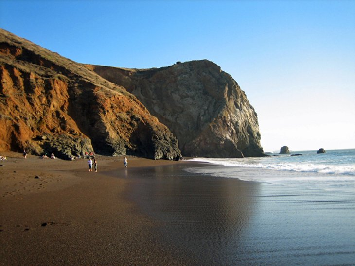

The Golden Gate Bridge is a California icon gracing San Francisco Bay. It is the
most photographed site in the city, with the orange structure backed by blue water, or in
many cases, peaking through low lying cloud. At night, the flood-lit structure is equally striking.
Alcatraz island
You can take a ferry over to the island and tour the site while listening to an exceptional
audio recording that offers a glimpse into life in the prison, rather than just a historical list
of the facts. The narration is even voiced by former inmates and guards of Alcatraz.
Legion of Honor
The Legion of Honor museum has a superb collection of European decorative arts, sculpture,
and paintings, along with antiquities from the Mediterranean and Near East. Admission to this museum
also gives you same-day admission to the de Young Museum.
Twin peaks
These two uninhabited hills, more than 900 feet high, have one of the finest views out over
the city and bay. Access is easy-you can drive to the north peak parking area, park your car,
and soak up the amazing vista.
Napa valley
Less than 1.5 hours from San Francisco, Napa Valley and Sonoma Valley are the two best-known
and largest grape-growing areas in California. Many people day trip to this area to enjoy
the scenery and stop in at some of the sites along the way.
Oracle Park
Home of the San Francisco Giants, Oracle Park is a fun place to take in a baseball game while
visiting the city. If you want to gaze out over the ball park to the sublime view of the ocean, buy
tickets along the 1st base or 3rd base lines or behind home plate.

Golden Gate Recreation Area
The park has walking trails, campgrounds, picnic areas, and beautiful beach areas. Some of
the beaches have fabulous views of the Golden Gate Bridge. The park is also a place of history and home
to the historic Fort Baker, a former US Army post from the early 20th century.
Exploratorium
One of San Francisco's top family attractions, the Exploratorium is an incredibly popular science
museum, with exhibits for both children and adults to enjoy. A huge number of diverse exhibits, and many
with
hand-on learning experiences, cover various areas of interest, all of which are designed to educate and
entertain.